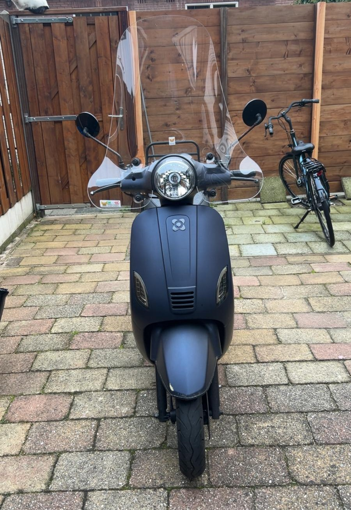
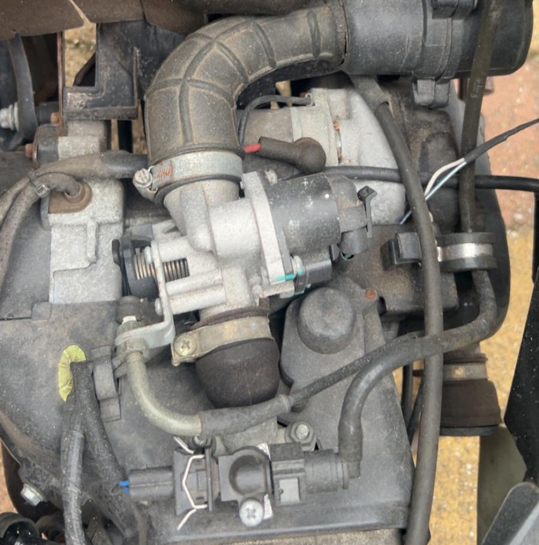
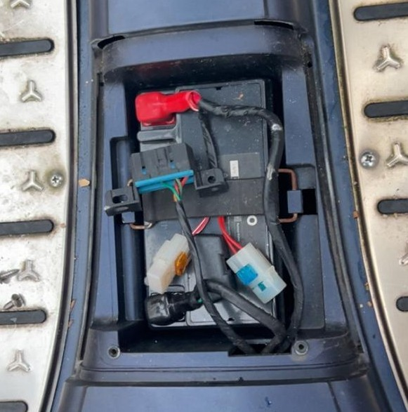
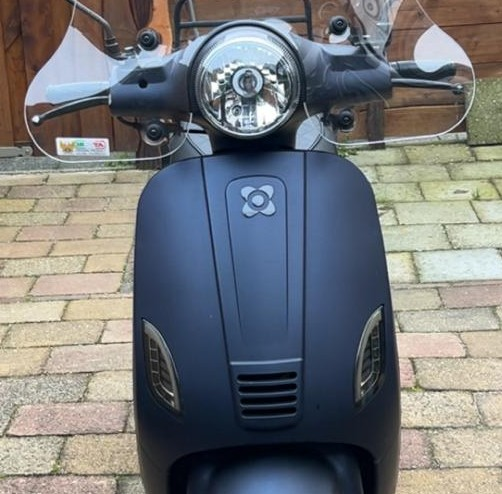

Welkom op de pagina
Een bezoek aan de scooterwinkel kan behoorlijk duur zijn, zeker wanneer je alleen een onderdeel hoeft te vervangen. Waarom zou je het niet zelf proberen? Op deze website vind je duidelijke handleidingen en praktische tips om zelf onderdelen van je AGM-scooter te vervangen. Zo bespaar je op montagekosten en leer je je scooter beter kennen.
Veiligheid staat voorop! Gebruik het juiste gereedschap en werk zorgvuldig. Twijfel je? Schakel een deskundige in. Wil je meer weten over veilig sleutelen, lees hieronder dan verder.
Om bij onderdelen te komen, moet je vaak eerst een kap losmaken. Een kap is de kunststof behuizing van de scooter, dus wat je aan de buitenkant ziet. Het wordt aanbevolen om eerst de pagina Kappen te bezoeken.
Een bezoek aan de scooterwinkel kan behoorlijk duur zijn. Waarom zou je onderdelen niet zelf vervangen? Op deze website vind je handleidingen en tips om zelf onderdelen van je AGM-scooter te vervangen.
Een voorbeeld van je scooter:

Kappen
De reparaties
Na het demonteren van de kappen, kan je aan de slag met het echte werk. Selecteer hieronder een pagina om te gaan sleutelen.
Wat wil je repareren?
Zie hier de opties
Motor
Bekijk handleidingen voor bijvoorbeeld de bougie, het luchtfilter en andere motoronderdelen.

Elektrisch
Leer meer over de accu, zekeringen, bedrading, hendels en schakelaars en hoe je storingen oplost.

Verlichting
Ontdek hoe je koplampen, achterlichten en richtingaanwijzers vervangt.
